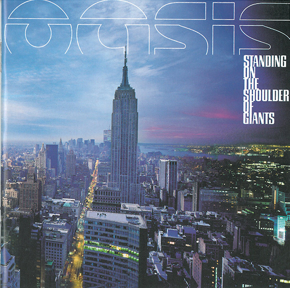

Standing on the Shoulder of Giants
Oasis
2000
1. F****n' in the Bushes
2. Go Let It Out
3. Who Feels Love?
4. Put Yer Money Where Yer Mouth Is
5. Little James
6. Gas Panic!
7. Where Did It All Go Wrong
8. Sunday Morning Call
9. I Can See a Liar
10. Roll It Over